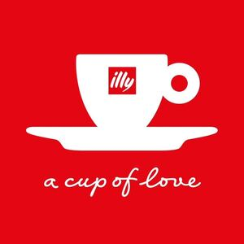

Trade Mark Journal No.2025/049 5 December 2025
WO0000001874320 (7,11,16,21,30,35,43)
Office of origin: Italy
Date of International Registration:18 June 2025
Date of designation in the UK:
18 June 2025

The mark contains the colours red and white.
The mark consists of a red square with a white coffee cup in the center, on the cup there is a red square containing the word "illy" in white, under the cup there is the white verbal element "a cup of love".
- Class 7
- Vending machines; beverage preparation machines, electromechanical; apparatus for aerating beverages; kitchen machines, electric; coffee grinders, other than hand-operated; mills for household purposes, other than hand-operated.
- Class 11
- Coffee capsules, empty, for electric coffee machines; coffee roasters; coffeepots, electric; coffee percolators, electric; coffee machines incorporating water purifiers; beverage cooling apparatus; heating and cooling apparatus for dispensing hot and cold beverages; coffee machines, electric; sous-vide cookers, electric; kettles, electric; roasters; kilns; refrigerating containers; refrigerating display cabinets; refrigerating apparatus and machines; espresso coffee machines; electric coffee machines for household purposes; electric tea makers.
- Class 16
- Photographs [printed]; periodicals; printed matter; catalogues; printed informational folders; brochures; advertising pamphlets; cardboard signboards; advertising signs of paper; advertising signs of cardboard; printed advertising boards of paper; printed advertising boards of cardboard; conical paper bags; carrier bags of paper or plastic.
- Class 21
- Coffee pots; coffee cups; coffee mugs; coffee services [tableware]; coffee stirrers; coffeepots, non-electric; coffee scoops; coffee percolators, non-electric; non-electric coffee frothers; coffee grinders, hand-operated; coffee filters, non-electric; vacuum coffee bean containers; non-electric coffee drippers for brewing coffee; demitasse sets comprised of cups and saucers; teapots.
- Class 30
- Coffee capsules, filled; coffee-based beverages; cocoa-based beverages; tea-based beverages; coffee; coffee flavourings; coffee substitutes; unroasted coffee beans; roasted coffee beans; vegetal preparations for use as coffee substitutes; seasonings; cereal bars; chocolate-based beverages; biscuits; cocoa; coffee beverages with milk; caramels [sweets]; waffles; chocolate; chocolate-based spreads; confectionery; crackers; croissants; cakes; natural sweeteners; pies; ice cream; fondants [confectionery]; cake frosting [icing]; chewing gum; cocoa nibs; liquorice [confectionery]; marzipan; treacle; honey; muesli; crushed barley; bread; almond paste; pastry dough; cake batter; pasta; pastries; petits fours; rice; golden syrup; cereal-based snack food; rice-based snack food; sorbets [ices]; cocoa substitutes; tea substitutes; tapioca; tea; tarts; frozen yogurt [confectionery ices]; sugar.
- Class 35
- Retail and wholesale services, including on-line, in relation to vending machines, beverage preparation machines, electromechanical, apparatus for aerating beverages, kitchen machines, electric, coffee grinders, other than hand-operated, mills for household purposes, other than hand-operated; retail and wholesale services, including on-line, in relation to coffee capsules, empty, for electric coffee machines, coffee roasters, coffeepots, electric, coffee percolators, electric, coffee machines incorporating water purifiers, beverage cooling apparatus, heating and cooling apparatus for dispensing hot and cold beverages, coffee machines, electric, sous-vide cookers, electric, kettles, electric, roasters, kilns, refrigerating containers, refrigerating display cabinets, refrigerating apparatus and machines, espresso coffee machines, electric coffee machines for household purposes, electric tea makers; retail and wholesale services, including on-line, in relation to coffee pots, coffee mugs, coffee cups, coffee services [tableware], coffee stirrers, coffeepots, non-electric, coffee scoops, coffee percolators, non-electric, non-electric coffee frothers, coffee grinders, hand-operated, coffee filters, non-electric, vacuum coffee bean containers, non-electric coffee drippers for brewing coffee, demitasse sets comprised of cups and saucers, teapots; retail and wholesale services, including on-line, in relation to coffee capsules, filled, coffee-based beverages, cocoa-based beverages, tea-based beverages, coffee, coffee flavourings, coffee substitutes, unroasted coffee beans, roasted coffee beans, vegetal preparations for use as coffee substitutes, seasonings, cereal bars, chocolate-based beverages, biscuits, cocoa, coffee beverages with milk, caramels [sweets], waffles, chocolate, chocolate-based spreads, confectionery, crackers, croissants, cakes, natural sweeteners, pies, ice cream, fondants [confectionery], cake frosting [icing], chewing gum, cocoa nibs, liquorice [confectionery], marzipan, treacle, honey, muesli, crushed barley, bread, almond paste, pastry dough, cake batter, pasta, pastries, petits fours, rice, golden syrup, cereal-based snack food, rice-based snack food, sorbets [ices], cocoa substitutes, tea substitutes, tapioca, tea, tarts, frozen yogurt [confectionery ices], sugar; presentation of goods on communication media, for retail purposes; providing business information via a web site; telemarketing services; online marketplace provision of goods and services for buyers and sellers; administration of consumer loyalty programs; administrative processing of purchase orders; business management consultancy; business management and enterprise organization consultancy; business organization consultancy; commercial administration of the licensing of the goods and services of others; commercial information and advice for consumers; commercial or industrial management assistance; compilation of information into computer databases; marketing; marketing studies; market studies; pay per click advertising.
- Class 43
- Hotel services; bar services; food and drink catering; serving of food and drink; self-service cafeteria services; café services.
ILLYCAFFÉ SPA
Representative: GLP S.R.L., Viale Europa Unita 171, I-33100 Udine, ITALY